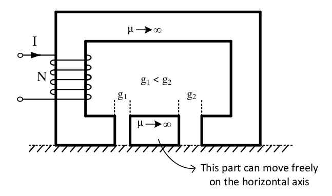
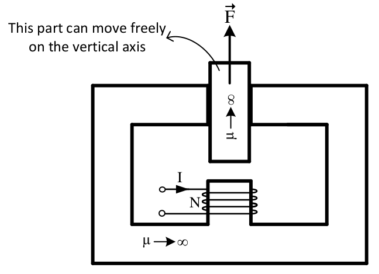
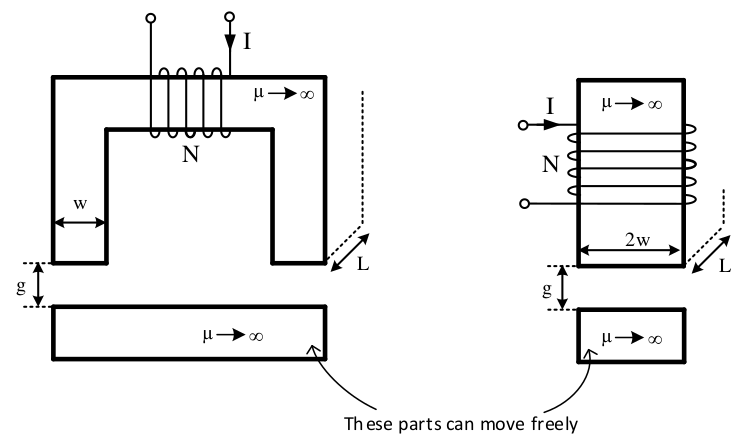
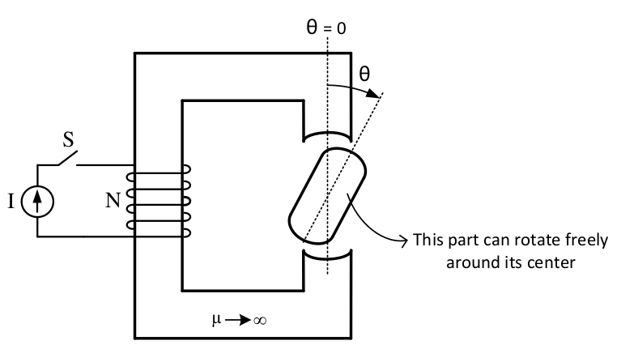
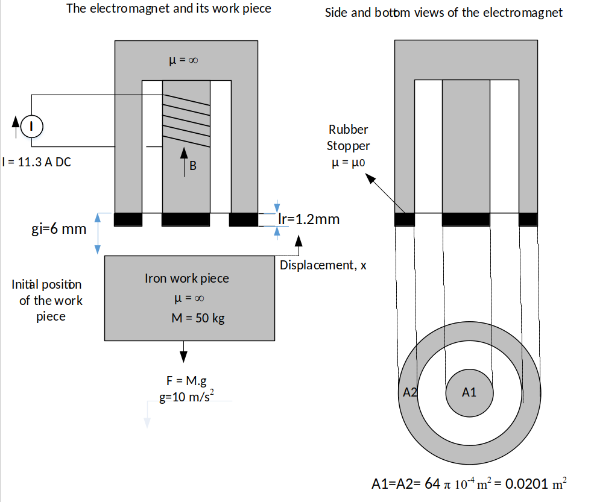

class: center, middle # EE-361 # MT-2 Recitation ## Ozan Keysan [ozan.keysan.me](http://ozan.keysan.me) Office: C-113 <span class="meta">•</span> Tel: 210 7586 --- ## 2016 Final Exam, Q2-b) -- ### What is the magnitude and the direction of the net electromagnetic force acting on the plunger shown below?  #### Neglect fringing and leakage flux and assume that the flux is homogenously distributed in the core. --- ## 2016 Final Exam, Q2-c) -- ### Is it possible to create an electromechanical force in the direction shown in the figure (F⃗ )? If not,why? If possible, explain how.  --- ## 2016 Final Exam, Q2-d) -- ### Compare the total electromagnetic forces created by each electromagnet. Which one exerts a larger force?  #### HINT: Magnetic attraction pressure is B⁄2μ(N/m2), or you can draw the equivalent magnetic circuits to compare the forces. --- ### 2016 Final Exam, Q2-e) -- ### The inductance of the system, shown in the figure below, is: ### \\( L = L\_{max} cos (2 \theta)\\)  #### i) Calculate the instantaneous torque acting on the rotor, when S is closed and constant direct current is applied to the coil. --- ### 2016 Final Exam, Q2-e) ### The inductance of the system, shown in the figure below, is: ### \\( L = L\_{max} cos (2 \theta)\\) #### ii) Is it possible to make a full rotation if the initial speed of the rotor is zero, when S is closed and constant direct current is applied to the coil? Why or why not? --- ### 2016 Final Exam, Q2-e) ### The inductance of the system, shown in the figure below, is: ### \\( L = L\_{max} cos (2 \theta)\\) #### iii) Describe a method (use a sketch if required) to get the rotor running continuously, using the switch S. ---  --- ## 2015 MT-2 -- ### Consider the electromagnet system given above. When the coil is energized by 11.3 A, the electromagnet should lift up the work piece thus reducing the air-gap length from (6mm) to (1.2mm). -- ### a) Calculate R1 and R2 shown in the figure as a function of the displacement (x) of the work piece. -- ### b) What should be the value of N in order to give B=1.0 Tesla for the final position of the work piece? -- ### c) Derive an expression for the electromechanical force as a function of x by assuming N=169 turns. -- ### d) Determine whether the electromechanical force can lift up the work piece or not at the initial position (x=0). --- ## 2015 MT-2 ### Consider the electromagnet system given above. When the coil is energized by 11.3 A, the electromagnet should lift up the work piece thus reducing the air-gap length from (6mm) to (1.2mm). ### e) Obtain the flux vs MMF (Φ/Ϝ) characteristics of the system for the initial (gi) and final (lr) positions of the work piece and plot them. -- ### f) Calculate the electrical energy converted to mechanical form (∆Wmech) in Joule by shading it on the graph. --- # Solutions ## Available in the ODTUClass --- ## You can download this presentation from: [keysan.me/ee361](http://keysan.me/ee361)